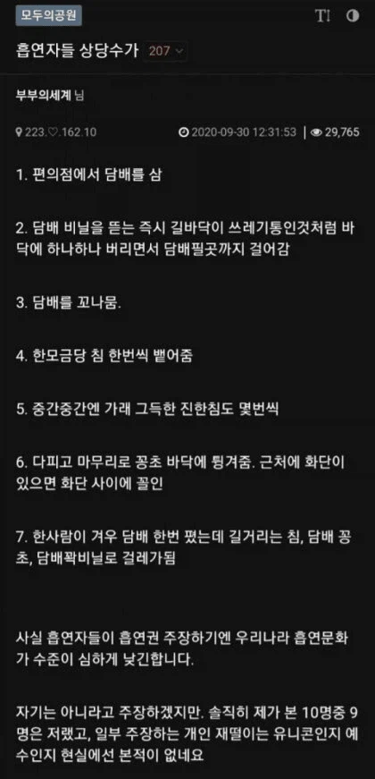

침 뱉는 건 우리나라만 그런다고 보긴 했는데

침 뱉는 건 우리나라만 그런다고 보긴 했는데
살면서 본 모든 흡엽자는 너무나도 이기적 이었다
아닌 경우가 앖었다
내 친구는 담배 전용 케이스에 담배 넣어두고, 전용 집게?같은 손잡이도 가지고 다니고, 휴대용 재떨이도 가지고 다님
평소에 잉글리시 스타일 정장 자주 입는데 엄청 잘어울림
손을 씻는게 귀찮은가? 생각듬
담배피고 손씻는게 어려운가 왜 집게를 쓰지... 급식이 나무젓가락으로 담배피는것도 아니고
냄새가 베인다나봄 그래도 냄새 베인다고 담배 피고 바로 입에 뭐 뿌리고 옷에 뭐 뿌리는거 보고 이렇게 까지 해서라도 펴야되는건가?라는 생각 함
얼마나 독한걸 피는지 모르겠는데 어지간한 담배 피고 비누로 손씻으면 냄새 안 날텐데
나한테는 거의 무슨 휴대용재떨이급 유니콘 같은 얘기처럼 들린다
나도 살면서 딱 그 한명 봄 ㅋㅋㅋ 난 담배 안펴서 뭐 피는진 모르겠고 뭐 이야기 하다 길어져서 흡연구역 같이 가서 떠들면서 봄
안경에 스트랩 악세사리 + 가는 테 안경 + 약간 펌 한 머리 + 댄디한 룩 까지 합쳐놓으니까 아무대나 버리는 게 잘 사앙이 안가긴 함
비누, 핸드워시, 핸드크림 등등으로 손씻어도 10분후에 스멀스멀 올라옴
저감담배만 폈었는데 사내 화장실에서 비누로 씻고 페브리즈 뿌리고 구취제거제 한번 뿌리고 들어가면 냄새 안난다고하던데 입사동기 친구한테 대놓고 물어봤었을때
손으로 한대 빨고 나중에 한대 더 빨고 손씻어보면 처음에는 핸드워시 냄새 남 그러다 10분정도 있으면 다시 손끝에서 담배 냄새 남
그런 사람은 아무데서 안피니까. 그러고보니 방금 터미널 들어오는데 직원한테 쿠사리 먹는 흡연자 봤는데 입구옆에서 피고 있더만 말끔하게 입은 젊은 사람이 ㅋㅋㅋ
나는 내가 몇 십년간 살면서 본 흡연자들은 다 이기적이었어
나도 흡연자인데 공감함
흡연 문화가 진짜 개좆으로 잡혀있음
내가 일본가서 차원 달라병 걸린게 맥주고 하늘이고 이딴게 아니라 흡연문화가 ㄹㅇ 차원이 다름 흡연장도 존나 깨끗하고
흡연장 깨끗한건 케바케라고 생각해요...
아키바 흡연장은 엄청 깨끗했는데
시모키타자와 흡연장 갔다가 진짜 토할뻔
그럿군요 아만보...ㅈㅅ하긴 우리나라도 깨끗한 곳은 깨끗하긴 하죠...
이해안가는게 담배불 붙어있는거 그대로 쓰레기통에 버리는 새끼들은 도대체 이유가 머냐?
하나같이 습관 잘못들인거임
침뱉는건 같은 흡연자로써도 이해불가임
왜 뱉음 도대체
걔네들이 딱히 생각하고 움직이는 종자들이 아닌지라
전담 펴라 다 피고 곽에 다시 넣을 수 있음
흡연구역 늘리고 흡연구역 외 흡연시랑 꽁초 투기 벌금을 좆나게 늘려야됨 담배값 인상해봐야 달라질건 없음
처벌이 쎄져야지
아파트 단지내 상가 갖고 있고 입주 초에는 자가 관리였던지라 내가 관리인이기도 했는데
우리 상가 코너에 위치한 1층 점포가 몇 년 동안 공실이었음
그리고 그 코너에 분수+폭포 조경 등 휴식 공간이 조성되어 있었음
입주 2년 후 비왔을 때 물 범람함
범람 이유는 담배 꽁초로 하수구가 막혔기 때문임
물조경도 있다보니 20m쯤 길이로 길게 트랜치가 설치되어 있었는데 그 공간 전체가 꽁초로 틀어막혔던 거임
그거 파내니 꽁초랑 담배갑 등으로 마대자루로 2자루 나옴
이후 모기장같은 얇은 철망을 추가로 깔았는데도 그 틈을 비집고 꽁초를 꽂아 넣음
그리고 3년차에는 분수가 망가짐
원인은 일반적인 담배보다 얇은 꽁초는 걸름망을 통과할 수 있었고 이게 원인이 되어 펌프가 고장났다고 함
이런 상황을 구청에 이야기해봐도 사유지니 알아서 해라 이 상황이었고
보건소에서 받아온 금연 스티커를 보도블럭에 포장하는 수준으로 덕지 덕지 붙여도 전혀 소용없었음
구청에 요청해 쓰레기통 설치하니 음료수까지 막 버리고 쓰레기통에 생활 쓰레기 버리는 일이 생기면서 도로 철거당함
결국 그 코너 상가 임대 맞춰지기 전까지 그 공간을 아예 공사장 가벽 세우듯 가벽 세워서 폐쇄했음
확실히 해외나가면 침안뱉음
해외는 길빵은 거의 일상처럼 해도 침은 안뱉긴하더라 ㄹㅇ
길에 침 뱉는 건 인도 중국 한국인 특
레알 선진국으로 분류되는 나라중에서 이렇게 일상적으로 침뱉는 나라는 한국밖에없을듯
극혐
뭐어때 아무도 안지키는 금연구역만 하루종일 만드는 위도가 저러라고 하는거 아니었냐. 쓰레기통 싹다 없앤것도 걍 길거리에 버리라는 의도 아니엇음?
나도 흡연충이지만 침뱉는건 이해가 안된다 가래껴서 뱉는것도 무식한데 왤케 빨때마다 침을뱉어
문신이 과학인것처럼
담배피는데 침뱉는애들 100명중 95명이상이 어딘가 결여되어있음
인성은 말한것도없고
보면 나이 지긋한 할배나 아재들중엔 저런사람 거의 드물거든?
걍 어렸을때 이상한 가오로 담배피면 침뱉게된거같음
겉멋으로 담배배우듯이
한개피 만원 ㄱㄱ
10에 9가 그렇가면 니주변이 그런거임
난 10에 1만그럼 애초에 담배피는사람이 잘없음
흡연장에서 담배피는데 제일 이해 안되는게 흡연장 재떨이가 분명히 있는데 거다 안버리고 바닥에 버리거나 화단에 꼽아두는 씨팔놈/년들이 제일 이해 안감, 거 재떨이에 버리는게 뭐 어렵다고 자꾸 바닥에 쳐버리는지 모르겠음 좆같은새끼들
금연 6주차 보건소에서 니코레트 받아옴
사람한테 침 뱉는건 폭행인대 담배연기는 폭행이 아닌가?
흡연자 아니더라도 어린애들도 길거리에 침 찍찍뱉고 돌아다니는거 보면, 이게 틀딱들 문화인가 했는데 그냥 한국 문화인듯.